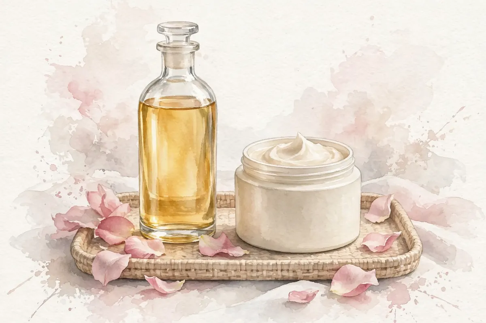

オイルとクリームの使い分け

ボディケアの売り場では、オイルとクリームが並んでいます。「どちらを選べばいいのか」は、施術のお客様からもよく聞かれる質問です。この記事では、質感の違いと、場面での使い分けの考え方を整理します。
違いは「広がり方」と「残り方」
オイルは、少量で広い範囲に広がりやすく、塗った後の感触が長く残る傾向があります。クリームは、伸ばした場所にとどまりやすく、量の調整がしやすい形です。どちらが優れているという話ではなく、質感の性格の違いです。手の甲に出して伸ばしてみると、広がり方と残り方の違いがよく分かります。
ポンプ式のオイル、チューブのクリームなど、容器との組み合わせでも使い勝手は変わります。片手で扱えるかどうかも、毎日の手順では大切な要素です。
場面で使い分ける
入浴後のゆっくりした時間には、広がりのよいオイルで広い範囲を手早く伸ばす方法が合います。朝の着替え前など、衣類への付き方を抑えたい場面では、残り方が穏やかなクリームや、量を控えた使い方が向きます。脚のように面積の広い部位はオイル、かかとのように部分的に使う場所はクリーム、と部位で分ける方法も、施術の現場ではよく使う組み立てです。
季節でも配分は変わります。乾燥する季節はオイルの出番を増やし、汗ばむ季節はクリーム中心に、といった調整です。
重ねる場合の順番と、量の目安
両方を使う場合は、一般に、さらっとした質感のものから先に、という順番が組み立てやすいです。ただし商品に指定がある場合はそちらが優先です。量の目安は、部位ごとに「手のひら何単位」と決める私の方法が、オイルでもクリームでも使えます。オイルは広がりがよい分、単位あたりの量を少なめに設定するのがコツです。
使い分けの軸は、質感、場面、部位。この3つを決めておくと、オイルとクリームは競合ではなく、役割分担の関係になります。
施術の現場の視点をもうひとつ。オイルは手の滑りがよいため、広い範囲を手のひらで触れながら伸ばす手順と相性がよく、クリームは狙った場所にとどまるため、部分的なケアの手順と相性がよいと感じています。自宅の棚では、オイルとクリームを「広い範囲用」「部分用」と役割で並べておくと、毎日の選択が簡単になります。両方を持っている方は、使い切る順番も計画しておくと、開封から長く経ったものが残りにくくなります。質感の違いは、実際に手の甲で比べるのが一番の近道です。売り場で試せる場合は、左右の手に分けて塗り比べてみてください。
どちらか一方しか持っていない場合は、まず今あるものの使い方を場面ごとに調整してみることをおすすめします。量と順番の工夫だけでも、使い分けに近い組み立ては可能です。その上で、足りない役割が見えたら、もう一方を買い足す判断をします。
セラフィナ「オイルは広く、クリームは部分に。場面と部位で役割分担するのが使い分けだね」